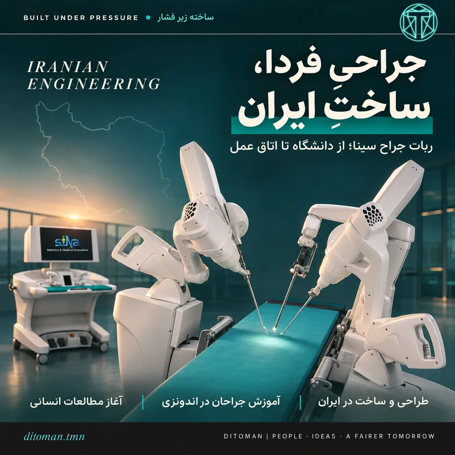
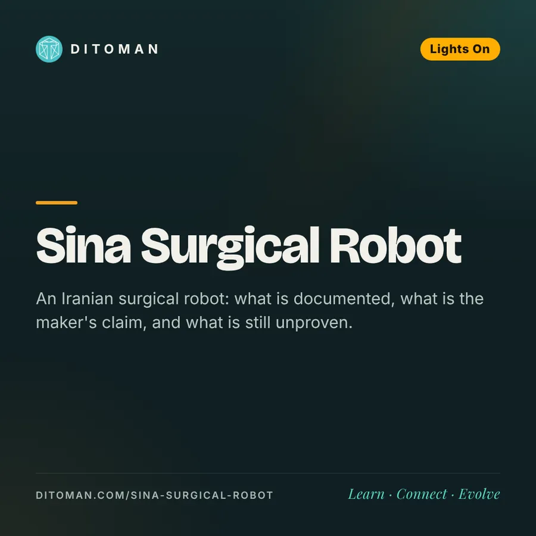

جراحیِ فردا، ساختِ ایران؛ ربات جراح سینا از دانشگاه تا اتاق عمل
Tomorrow's Surgery, Made in Iran: The Sina Surgical Robot from University to Operating Room
An Iranian surgical robot: what is documented, what is the maker's claim, and what is still unproven.
یک ربات جراحی ایرانی: چه چیزی مستند است، چه چیزی ادعای سازنده است و چه چیزی هنوز ثابت نشده است.
اغلب خبرهای فناوری ایرانی یا بیش از حد بزرگنمایی میشوند یا کلاً نادیده گرفته میشوند. ربات جراح سینا نمونهی خوبی است برای اینکه هر دو را کنار بگذاریم: ببینیم چه چیزی مستند است و چه چیزی هنوز ادعای سازنده.
۰۱. سینا چیست و از کجا آمده؟
سینا یک سیستم جراحی رباتیک برای جراحی کمتهاجمی است. به گفتهی وبسایت شرکت، تیم سازنده از سال ۲۰۰۳ در آزمایشگاه رباتیک جراحی کار کرده و شرکت سینا رباتیک در ۲۰۱۵ بهصورت شرکتی منشعب از دانشگاه علوم پزشکی تهران شکل گرفته است، پس از حدود ۱۵ سال پژوهش. نسخهی تجاری با نام Sina Flex معرفی میشود.
۰۲. آنچه مستندتر است: اندونزی
- آموزش (گزارش ۲۰۲۲): خبرگزاری آنتارا از آموزش دستکم ۸۰ جراح با شبیهساز واقعیت مجازی سینا در بیمارستانهای حسن صدیقین (باندونگ) و ساردجیتو (یوگیاکارتا) نوشته است.
- جراحی از راه دور (۲۰۲۳): به گفتهی شرکت، جراحی از راه دور در فاصلهی حدود ۵۰۰ کیلومتر در اندونزی انجام شد. این مورد را بهعنوان اعلام شرکت میآوریم، نه نتیجهی داوریشده.
- ابزار ۵ میلیمتری: یک جراح اندونزیایی در گفتوگو با رسانه آن را از ویژگیهای سیستم دانسته است.
۰۳. مطالعهی انسانی در ایران
به گزارش خبرگزاری مهر از قول مدیرعامل شرکت، از اواسط فروردین ۱۴۰۴ هشت عمل برداشتن کیسهصفرا با سینا انجام شده است. سن بیماران ۴۲ تا ۶۳ سال بوده و بیماران همان روز یا روز بعد ترخیص شدهاند. مدیرعامل همچنین از مقیاسدهی حرکت (کاهش ۱۰ برابری حرکت دست) و کاهش لرزش گفته است.
قبل از هیجانزده شدن: این اعداد را خود سازنده اعلام کرده و دادهی داوریشدهی نتایج بالینی پیدا نشد. هشت بیمار نمونهی بسیار کوچکی است و ایمنی یا برتری نسبت به روشهای موجود را اثبات نمیکند. در سایت شرکت نیز تأیید رسمی کاربرد بالینی روی انسان دیده نشد. «آموزش جراحان» و «جراحی روی بیمار» دو مرحلهی متفاوتاند.
۰۴. چرا باز هم خبر مهمی است؟
ساخت یک ربات جراحی ترکیبی از مکانیک دقیق، کنترل، نرمافزار، تصویر و استانداردهای پزشکی است؛ کار یکشبه نیست. مسیر دانشگاه، پژوهش بلندمدت، ساخت داخلی، آموزش بینالمللی و حالا قدم اول بالینی، همان چیزی است که فناوری پیشرفته را میسازد. قدم بعدی روشن است: انتشار دادهی بالینی، بررسی مستقل و دریافت مجوزهای رسمی.
منابع
- Sina Robotics، دربارهی ما
- Antara، ۸۰ جراح در آموزش جراحی رباتیک و از راه دور با واقعیت مجازی
- خبرگزاری مهر، گفتوگو با مدیرعامل دربارهی مطالعهی انسانی سینا
- The Diplomatic Insight، ۲۶ اکتبر ۲۰۲۲
- surgicalroboticstechnology.com، صفحات Sina Flex
تصویر کاور تصویرسازی است، نه عکس دستگاه واقعی. • The cover is an illustration, not a photo of the real device.